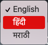

The map shows who owns the land that informal settlements are built on.
Click on a feature to see information on cluster ID, CTS number, and land owner.
 Search for settlements by their name using the search icon on the map
Search for settlements by their name using the search icon on the map

Change the language with the drop down
This map uses data that from the Slum Rehabilitation Authority (SRA) and the Municipal Corporation of greater Mumbai (MCGM)
obtained in December 2020.
The dataset obtained has attributes on 'Cluster name', 'CTS number', 'Ownership' and 'Land holder's name'
for informal settlement clusters in Mumbai.
Read documentation on the project in this link